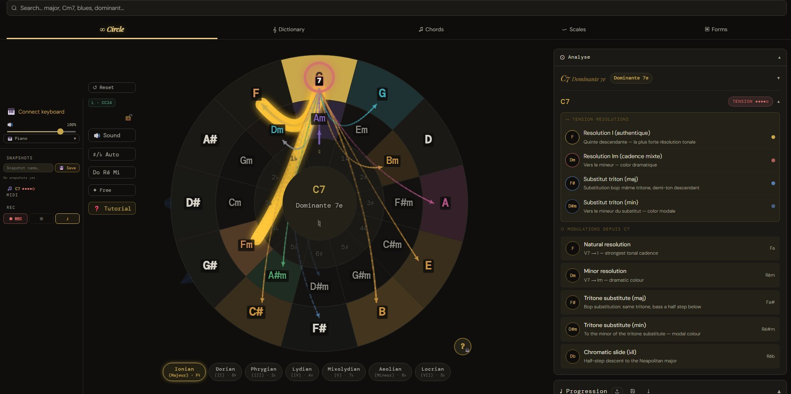

🔥 BETA OUVERTE — Prix fondateur 39€ au lieu de 59€ · Offre limitée · En profiter →
Cercle des quintes interactif · Dans le navigateur
HARMOLINK connecte ton clavier MIDI, détecte ton accord en temps réel, et révèle instantanément ses tensions, ses résolutions et tous ses chemins possibles — visualisés sur le cercle des quintes, avec son.

Pourquoi HARMOLINK ?
Tu peux enchaîner des accords depuis des années sans vraiment savoir pourquoi certains sonnent bien ensemble. Les méthodes te donnent des listes à mémoriser. HARMOLINK te montre les liens en direct.
Branche ton clavier MIDI — joue un G7. Le cercle s'anime : la résolution vers C s'allume en or, la cadence deceptive vers Am en vert. Les flèches pointent vers là où la musique veut aller. Pas de théorie abstraite — juste la réalité de l'harmonie, visible.
Joue un Bdim7 — les 4 résolutions enharmoniques apparaissent simultanément. Passe en mode Dorien — le cercle se recolore entier pour te montrer la nouvelle logique harmonique. C'est une expérience.
“En 10 minutes avec HARMOLINK, j'ai compris les substitutions de triton jazz que 2 ans de théorie n'avaient pas réussi à m'expliquer.”— La différence entre lire une carte et voir le terrain.
Fait pour toi si tu es
Ce que tu peux faire
HARMOLINK n'est pas une simple visualisation. C'est un environnement complet : tu joues, tu analyses, tu composes, tu enregistres, tu t'entraînes — tout depuis le navigateur.
Branche n'importe quel clavier MIDI — l'accord est identifié instantanément, avec ses renversements (E-G-C = Cmaj/E), ses extensions (Cmaj9, Dm7b5…). Le cercle s'allume, les flèches de relation apparaissent.
Chaque accord affiche son niveau de tension. Pour les dominantes 7e et dim7, des flèches animées montrent en temps réel vers où la musique veut aller. Le cercle devient une carte vivante.
Un bouton pour passer en Dorien, Phrygien, Lydien, Mixolydien… Le cercle entier se recolore pour afficher la logique du mode — ses degrés, ses couleurs harmoniques, ses particularités.
Glisse des accords dans la grille, choisis un arpège (cascade, brisé, pendule…), un rythme (valse, syncopé…), ajuste la basse et le registre. Joue en boucle avec le métronome, exporte en MIDI.
Enregistre ce que tu joues au clavier MIDI avec pré-compte et métronome. Le take est capturé en MIDI, glissable dans la grille, calé au tempo — et exportable directement.
L'appli affiche les accords de ta progression un par un et détecte en temps réel si tu les joues correctement au clavier MIDI. 3 niveaux de difficulté, 100 progressions du débutant au jazz avancé.
Configure ton cercle avec tes accords favoris parmi les 50+ types disponibles, sauvegarde l'état complet en un clic, importe-le sur un autre appareil ou partage-le avec d'autres musiciens. Ton cercle, ta couleur harmonique.
Comment ça marche
OUVRE L'APP — ZÉRO INSTALLATION
HARMOLINK tourne entièrement dans le navigateur. Pas de compte, pas d'app à télécharger. Desktop, tablette, mobile — ça marche partout.
BRANCHE TON MIDI OU CLIQUE SUR LE CERCLE
Un clic pour connecter ton clavier MIDI via WebMIDI. Ou explore directement en cliquant les accords sur le cercle — le son joue en Piano, Rhodes ou Strings.
VIS LES RELATIONS S'ALLUMER EN DIRECT
Le cercle s'anime : les accords liés se colorent selon leur fonction (dominante, relatif, emprunt modal…). Des flèches indiquent les résolutions. Tu vois l'harmonie bouger.
CONSTRUIS, ENREGISTRE, EXPORTE
Glisse tes accords dans la grille, ajoute arpèges et rythmes, enregistre ton jeu en MIDI. Exporte en MIDI pour ton DAW, en PDF pour tes élèves, en WAV pour une démo rapide.
Démonstration — accord détecté
Dominante septième — tension maximale
Tension harmonique
L'app en action
C7 — Dominante 7e · Tensions & résolutions animées
Les flèches dorées montrent en temps réel où la musique veut aller. 4 résolutions possibles, affichées instantanément.
Accès
Gratuit — Pour toujours
Aucune carte requise
PRO — Accès Beta · À vie
Version beta active · Mises à jour continues incluses · Pas d'abonnement.
Prêt à voir l'harmonie ?
Gratuit. Dans le navigateur. Aucune installation. Aucun compte. Commence dans 10 secondes.
⬇ Essayer HARMOLINK — Gratuit📱 Installer sur mobile
Ouvre Chrome sur ton téléphone (pas Messenger, pas Safari)
Va sur harmolink-pro.netlify.app/free/
Menu ⋮ → Ajouter à l'écran d'accueil → L'icône HARMOLINK apparaît sur ton bureau
⚡ Fonctionne aussi sur iOS — Safari → Partager → Sur l'écran d'accueil